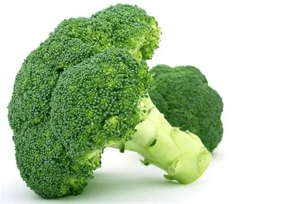

Recipesss
Broccoli Sucks
Broccoli sucks, and no I am not 5 years old
The taste of broccoli is disgusting
I am old and I don't like broccoli
I grew up eating broccoli because my mom mad me I am 22 years old and I still hate brocoliBroccoli sucks because it has that strong, bitter taste that hits you the second it touches your tongue, no matter how much cheese, butter, or seasoning you try to drown it in.
The texture doesn’t help either—it's somehow mushy and fibrous at the same time, like chewing a tiny tree that refuses to break down. Even the smell is intense; when someone steams broccoli, the whole kitchen fills with this weird, funky cloud that lingers way too long. People claim it’s “healthy,” but that doesn’t magically make it enjoyable. Honestly, of all the vegetables out there, broccoli might just be the most overhyped one.1. High in vitamins
Broccoli is loaded with vitamin C (boosts immunity and skin health) and vitamin K (important for bone health and blood clotting). It also contains vitamin A, which supports vision and immune function.2. Great source of fiber:
It helps with digestion, keeps you fuller longer, and supports a healthy gut.3. Packed with antioxidants:
Broccoli contains compounds like sulforaphane, which may help reduce inflammation and protect cells from damage.So… even if broccoli sucks taste-wise, your body definitely appreciates it. Want a list of ways to make it taste better too? 